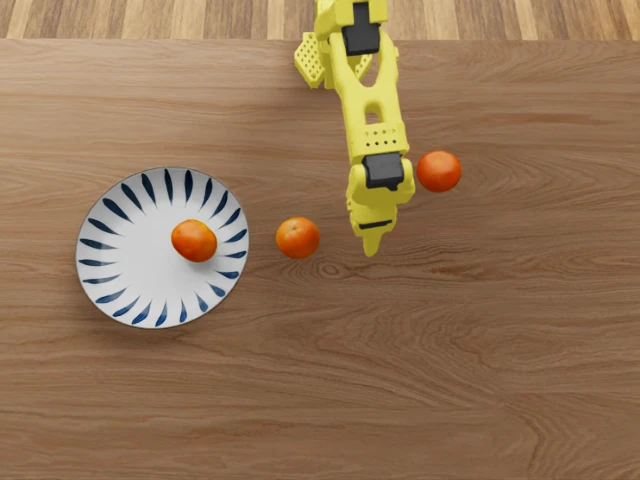
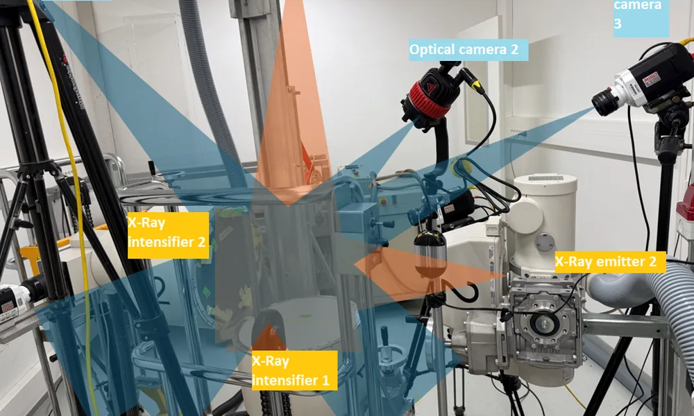
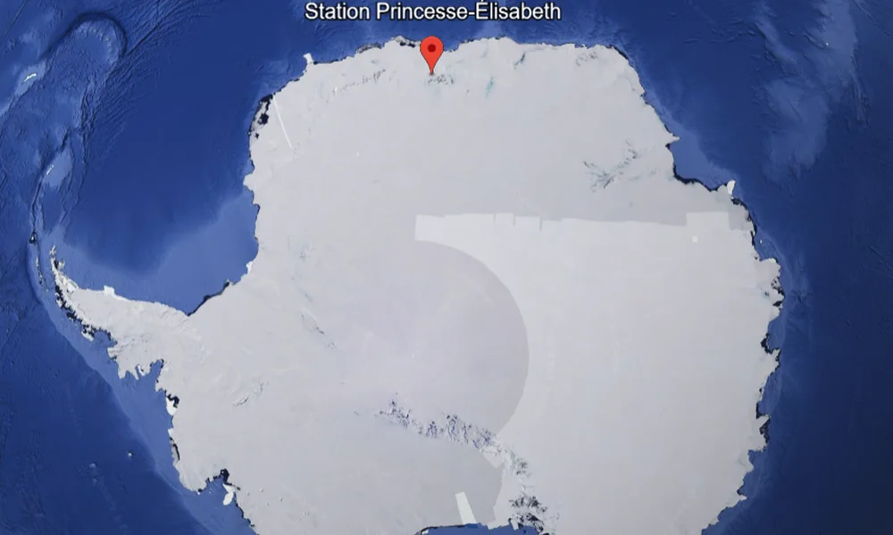
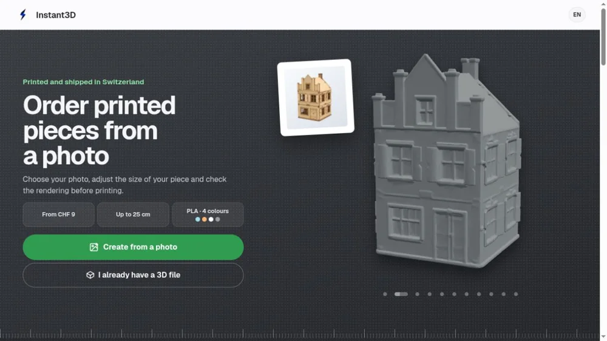
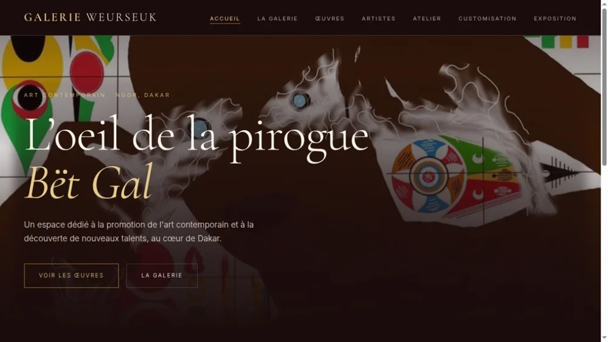
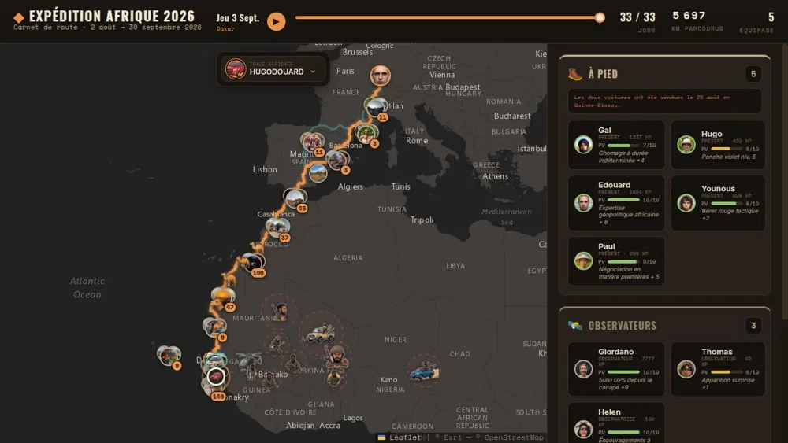

Robotics & researchMaster’s projectTraining SmolVLA for pick-and-place with an SO-101 robot arm in Isaac Sim, with task orchestration and recovery. View code
Computer vision & researchSalamander pose estimationTracking salamander skeletons from X-ray videos with a Kalman filter, then training a markerless DeepLabCut model to estimate pose from ordinary cameras.Read the report
Environmental data & researchSnow sublimation in AntarcticaProcessing field measurements from the Princess Elisabeth station to estimate sublimation and snow transport with eddy covariance and Monin–Obukhov methods.Read the report
Manufacturing & webInstant3DA photo-to-3D-print service, from model generation and print preparation to ordering and production.Visit website
Art & webGalerie WeurseukA website showcasing the works and artists of Weurseuk Gallery.Visit websiteView code
Travel & mappingJourney through AfricaAn interactive map following an overland journey from Switzerland to Freetown.Visit websiteView code